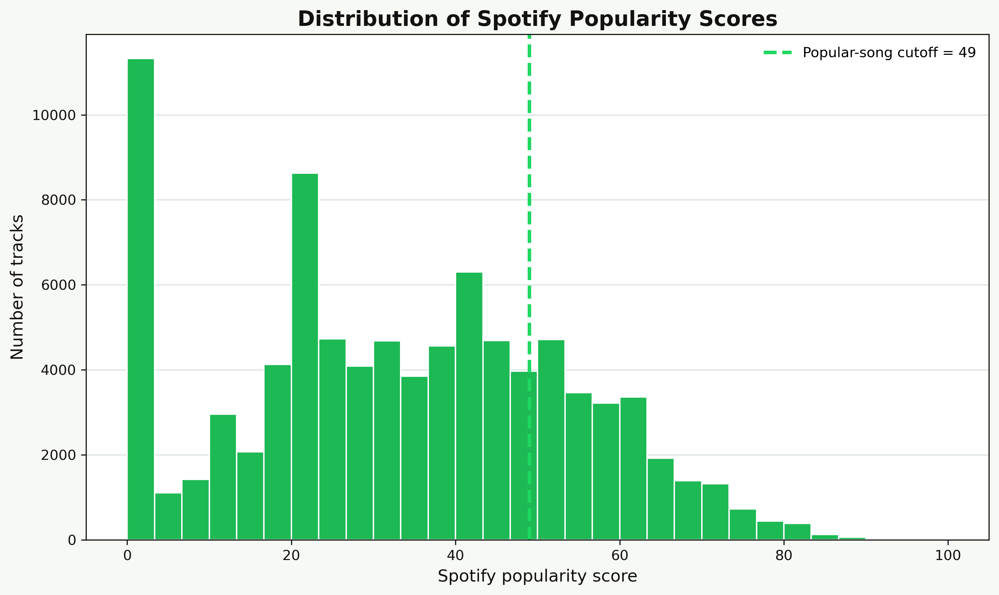
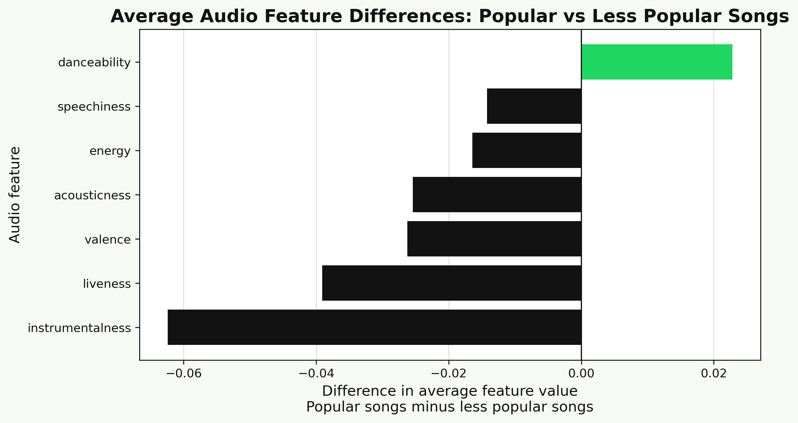
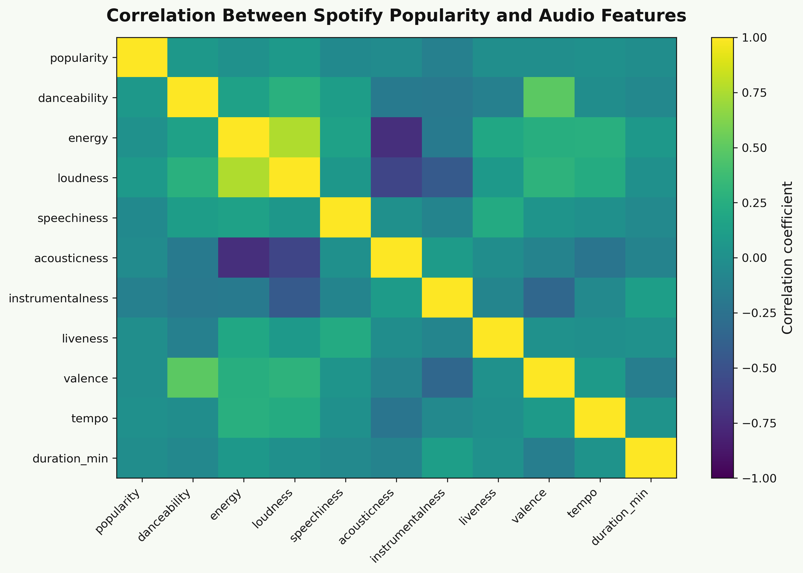
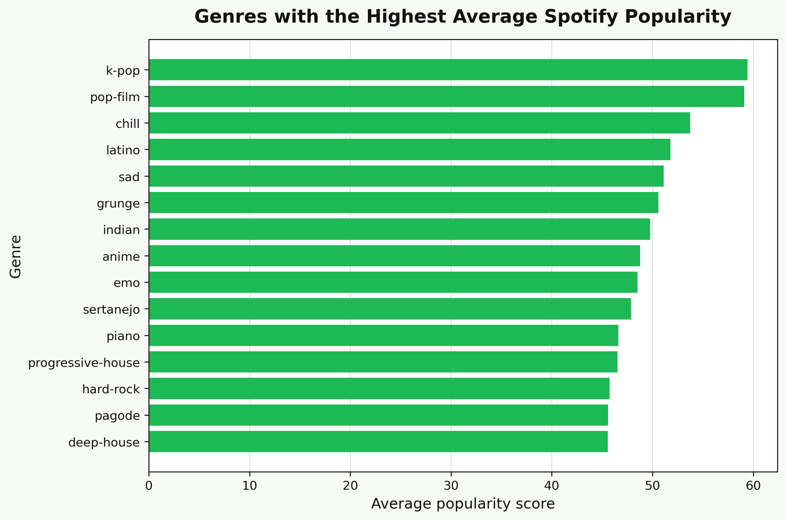

00
Introduction
People often talk about hit songs as if there is a formula: make it danceable, energetic, catchy and emotionally bright. But does the data actually support that idea? Using 89,740 Spotify tracks, this project tests whether measurable audio features can explain which songs become more popular.
The appeal of a hit-song formula is easy to understand. Streaming platforms measure music in ways that feel precise: danceability, energy, acousticness, instrumentalness, tempo, valence and more. These variables make songs look comparable, even when the listening experience is personal and cultural. If popular music really followed a simple pattern, then popular tracks should stand out clearly in these measurements.
This analysis gives a more cautious answer. Spotify audio features do show some differences between popular and less popular songs, but the differences are modest. Popular songs in this dataset are slightly more danceable and less instrumental, but they are not clearly more energetic or happier. A simple predictive model also struggles to identify popular songs, suggesting that audio features alone cannot explain popularity.
01
Data and definition of popularity
The raw dataset contained 114,000 tracks. After cleaning, the analysis used 89,740 unique tracks, covering 113 genres and 31,437 artists. This matters because music popularity is not evenly distributed across artists or genres. Some songs sit in very visible parts of the streaming ecosystem, while many others receive little attention.
Popularity was defined using Spotify's popularity score. Rather than choosing a subjective label such as "hit" or "flop", the project marked tracks in the top 25% of popularity scores as popular. The cutoff for this dataset was 49. This created 22,520 popular songs and 67,220 less popular songs.

02
Are popular songs sonically different?
The strongest version of the hit-formula idea would predict large audio differences between popular and less popular tracks. The results do not show that. Popular songs are slightly more danceable, with an average danceability score of 0.579 compared with 0.556 for less popular songs. They are also less instrumental, with an average instrumentalness value of 0.127 compared with 0.189.
These patterns make intuitive sense. Mainstream tracks often centre vocals, hooks and rhythmic clarity, while highly instrumental music may serve different listening contexts. However, the size of the differences is small. A slightly higher danceability score does not turn a song into a hit, and lower instrumentalness does not guarantee broad appeal.
Duration also differs slightly: popular songs average 3.68 minutes, compared with 3.87 minutes for less popular songs. This suggests popular tracks are somewhat shorter on average, but the difference is not large enough to support a simple rule. The data also challenges a common assumption about popular music being more energetic or happier. In this dataset, popular songs are slightly less energetic and slightly lower in valence than less popular songs.

The correlation heatmap reinforces this cautious interpretation. Audio features relate to one another in expected ways, such as energy and loudness moving together, but popularity does not appear to be strongly tied to one clear sonic dimension. This weakens the idea that one or two measurable audio features can explain why some songs rise above others.

03
Does genre matter?
Genre gives a different angle on the same question. If audio features alone were enough to explain popularity, then genre-level differences would be less central to the story. Instead, the genre results suggest that popularity is partly shaped by broader listening contexts. The highest average-popularity genres include k-pop, pop-film, chill, latino and sad.
This does not mean those genres cause popularity. A genre's average score may reflect many external conditions: the size and activity of its audience, the visibility of artists, playlist placement, international fan communities, marketing campaigns, release timing and how Spotify users search for or replay music. Genre is useful here because it points beyond the sound file itself.

04
Can a model predict popularity?
The project also tested whether a logistic regression model could classify tracks as popular or less popular using Spotify audio features. At first glance, the model accuracy looks strong: 0.7483, or about 75%. However, accuracy can be misleading when one class is much larger than the other. In this dataset, less popular songs outnumber popular songs by about three to one.
The more revealing metric is recall for popular songs. The model's recall for popular songs was only 0.0139, meaning it correctly identified only about 1.4% of popular tracks. Precision for popular songs was 0.4535, so when the model did predict a track as popular, it was correct less than half the time. The model mostly learned to predict tracks as less popular.
This result is important because it separates surface performance from useful prediction. A model that achieves high accuracy by rarely identifying popular songs is not very helpful for answering the research question. The weak recall suggests that audio features do not contain enough information on their own to distinguish most popular tracks from the rest.
05
Conclusion and limitations
The analysis does not support the idea of a simple audio formula for popularity. Popular tracks are slightly more danceable and less instrumental, but the differences are modest rather than dramatic. The logistic regression model achieved around 75% accuracy, but this was misleading because it almost always predicted tracks as less popular and identified only 1.4% of popular tracks correctly. This suggests that Spotify audio features alone are not enough to explain popularity. A song's success is likely shaped by external factors that are not captured in the dataset, such as artist recognition, playlist placement, marketing, social media exposure, release timing and genre-specific listening behaviour.
There are also limits to what this analysis can claim. Spotify popularity is a platform-based measure, not a universal measure of cultural value or musical quality. The analysis is observational, so it cannot prove that any feature causes popularity. It also uses a simplified popular-versus-less-popular split, which is useful for modelling but reduces a continuous popularity score into two groups.
The main takeaway is not that audio features are irrelevant. They help describe patterns in the catalogue, and they reveal small differences between groups. But popularity is a social, commercial and platform-driven outcome as well as a musical one. The data is better read as a warning against overconfidence: hit songs may share some traits, but there is no clear recipe hiding in these audio features.
06
Methodology note
The reproducible analysis was completed in the accompanying Jupyter notebook. The workflow cleaned the raw 114,000-track dataset, removed duplicate tracks, created a popularity label using the top 25% cutoff, compared average audio features between groups, examined genre-level average popularity and trained a logistic regression model. The dataset is a public archived Spotify tracks dataset, so the analysis should be interpreted as a study of this dataset rather than a live pull from Spotify's current API. The notebook, raw data, cleaned data and exported figures are included in the GitHub repository so the analysis can be reproduced. The figures shown here are the original exported figures from that notebook and are presented without changing the underlying data, labels, values or analytical results.